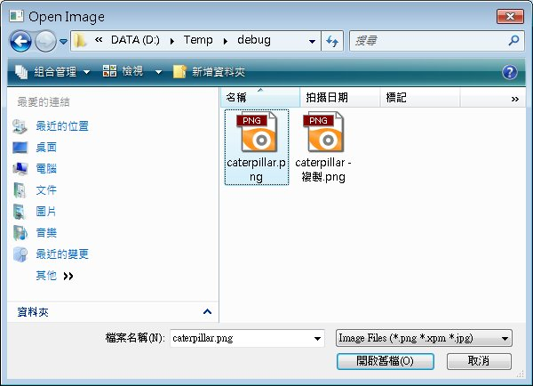
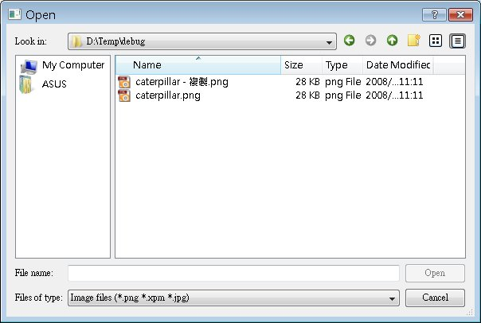

| 在視窗程式中開啟檔案或另存檔案的動作，會使用檔案對話方塊來讓使用者方便的選取或決定檔案名稱，在Qt中，這則是由QFileDialog類別負責，在這邊將示範一些簡單的使用方式。 QFileDialog最簡單的使用方法就是利用它所提供的靜態方法，例如下面這個程式會顯示一個開啟檔案的對話方塊，選取檔案後顯示所選取的檔案路徑與名稱： #include <QApplication> getOpenFileName()方法會顯示一個檔案開啟的對話方塊，如果要顯示儲存檔案的對話方塊，就使用getSaveFileName()方法， 在參數的指定上，"C:\\"指定開啟時的工作目錄，而"Image files (*.png *.xpm *.jpg)"指定開啟檔案時的副檔名過濾，如果還要使用其它的過濾方式，可以使用分號，如下所示： "Image files (*.png *.xpm *.jpg);;Text files (*.txt);;XML files (*.xml)"
下圖為Qt的檔案對話方塊執行畫面：  也可以新增物件的方式來使用QFileDialog類別，這可以設定更多的選項，下面這個程式示範一些常用的方法： #include <QApplication> setDirectory()設定對話方塊第一個顯示的目 錄，setFileMode()設定使用者可以選擇的檔案類型，ExistingFile表示可選取已存在的檔案，AnyFile則表示您可以選擇任何檔 案，即使檔案不存在（像是在另存新檔時指定一個新的檔名時使用），Directory表示可以選取目錄，DirectoryOnly表示只可以選取目錄， ExistingFiles表示可以進行檔案多選。 setFilter()即使設定檔名過濾，setViewMode()用來設定檢視的細節，Details顯示詳細資訊，而List則只顯示檔名與圖示，selectedFiles()會傳回所選取的檔案清單，以QStringList傳回（繼承自QList），程式中使用的是Java風格的迭代方式，您也可以使用索引風格： QStringList fileNames = dialog->selectedFiles();
for (int i = 0; i < fileNames.size(); i++) { label->setText("<center>" + fileNames.at(i) + "</center>"); } 或STL風格的迭代器： QStringList fileNames = dialog->selectedFiles();
QStringList::const_iterator iterator; for (iterator = fileNames.constBegin(); iterator != fileNames.constEnd(); iterator++) { label->setText("<center>" + (*iterator) + "</center>"); } 下圖為程式執行時的一個畫面：  |